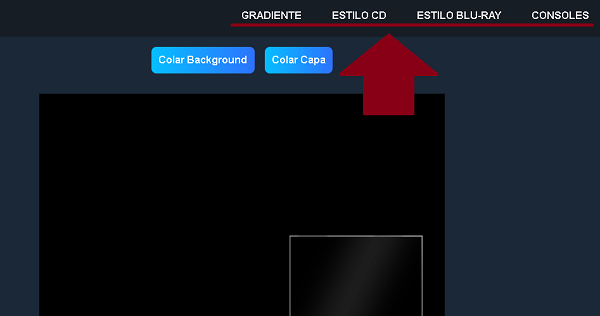
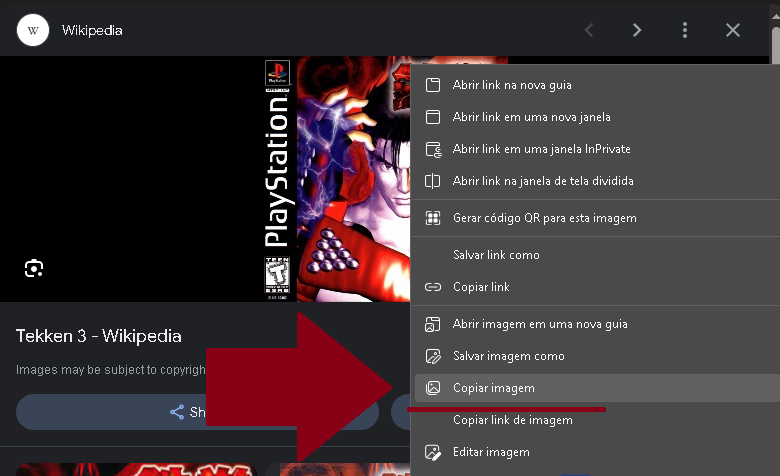
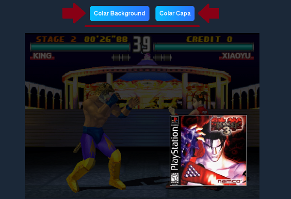
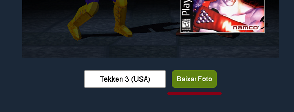

O caminho da pasta: /SD1 (mmc)/MUOS/info/catalogue/*nome do console*
Configure a Artbox do muOS para Fullscreen + Behind, para que a lista de jogos apareça.
1 - Escolha o estilo que deseja para seu background
Clique em alguma das abas do menu. 2 - Como obter a imagem
Copie alguma imagem da internet ou do computador clicando com o botão direito do mouse (O tamanho da imagem copiada influencia no resultado final).
Caso a imagem seja do computador, clique em visualizar e só então faça o processo de copiar.
3 - Colando a imagem
Retorne ao site e clique no botão de colar para enviar a imagem ao template selecionado, é interessante escolher uma imagem para o background e outra para a capa do jogo.
4 - Salvando a image
Escolha o mesmo nome da rom do seu jogo e clique em baixar, assim quando enviar o arquivo png para a pasta do cartão sd, o muOS vai reconhecer que aquela imagem pertence ao jogo.
